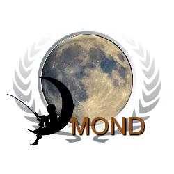
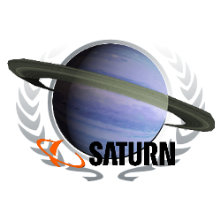
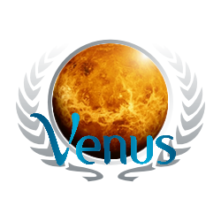

Startseite
Über uns
Reiseziele
Planeteninformationen
Impressum
Planeteninformatioen
  Föderation Erde
Die Erde ist der dichteste, fünftgrößte und der Sonne drittnächste Planet des Sonnensystems. Sie ist Ursprungsort und Heimat aller bekannten Lebewesen. Ihr Durchmesser beträgt mehr als 12.700 Kilometer und ihr Alter etwa 4,6 Milliarden Jahre. Nach ihrer vorherrschenden geochemischen Beschaffenheit wurde der Begriff der „erdähnlichen Planeten“ geprägt. Das astronomische Symbol der Erde ist Earth astrological symbol oder Crossed circle
Da die Erdoberfläche zu etwa zwei Dritteln aus Wasser besteht und daher die Erde vom All betrachtet vorwiegend blau erscheint, wird sie auch Blauer Planet genannt. Sie wird metaphorisch auch als „Raumschiff Erde“ bezeichnet.
Die Erde spielt als Lebensgrundlage des Menschen in allen Religionen eine herausragende Rolle als heilige Ganzheit in etlichen ethnischen, Volks- und historischen Religionen entweder als Vergöttlichung einer „Mutter Erde“ oder als personifizierte
Erdgöttin. Weitere Informationen zum Planeten Erde finden sie hier
Republik Mond
Der Mond ist der einzige natürliche Satellit der Erde. Sein Name ist etymologisch verwandt mit Monat und bezieht sich auf die Periode seines Phasenwechsels. Weil die Trabanten anderer Planeten des Sonnensystems im übertragenen Sinn meistens ebenfalls als Monde bezeichnet werden, spricht man zur Vermeidung von Verwechslungen mitunter vom Erdmond. Er ist mit einem Durchmesser von 3476 km der fünftgrößte bekannte Mond des Sonnensystems und gegenüber seinem Zentralkörper Erde auch außergewöhnlich groß (etwa ein Viertel des Erddurchmessers).
Weil er sich relativ nahe der Erde befindet, ist er bisher der einzige fremde Himmelskörper, den Menschen betreten haben, und auch der am besten erforschte. Trotzdem gibt es noch viele Unklarheiten, etwa in Bezug auf seine Entstehung und manche Geländeformen. Die jüngere Entwicklung des Mondes ist jedoch weitgehend geklärt.
Sein astronomisches Symbol ☾ ist die abnehmende Mondsichel, wie sie (nach rechts offen) von der Nordhalbkugel der Erde aus erscheint.
Weitere Informationen zum Planeten Mond finden sie hier
Saturn
Der Saturn ist von der Sonne aus gesehen der sechste Planet des Sonnensystems und mit einem Äquatordurchmesser von etwa 120.500 Kilometern (9,5-facher Erddurchmesser) nach Jupiter der zweitgrößte. Mit 95 Erdmassen hat er jedoch nur 30 % der Masse Jupiters. Wegen seines schon im kleinen Fernrohr sichtbaren Ringes wird er oft auch der Ringplanet genannt.
Der Saturn hat eine durchschnittliche Entfernung zur Sonne von gut 1,43 Milliarden Kilometern, seine Bahn verläuft zwischen der von Jupiter und der des sonnenferneren Uranus. Er ist der äußerste Planet, der auch mit bloßem Auge gut sichtbar ist, und war daher schon Jahrtausende vor der Erfindung des Fernrohrs bekannt.
Er ist ein Gasplanet, dessen untersuchte obere Schichten zu etwa 96 % Stoffanteil aus Wasserstoff bestehen, und der von allen Planeten des Sonnensystems die geringste mittlere Dichte (etwa 0,69 g/cm³) aufweist. Von den anderen Planeten hebt sich der Saturn durch seine besonders ausgeprägten und schon lange bekannten Ringe ab, die zu großen Teilen aus Wassereis und Gesteinsbrocken bestehen.
Sein scheinbarer Winkeldurchmesser beträgt je nach Erdentfernung zwischen 15″ und 20″, jener der Ringe zwischen 37″ und 46″. Die sogenannten Äquatorstreifen der Wolkenschichten des Saturn sind weniger deutlich als bei Jupiter, was wahrscheinlich mit einer hochlagernden Dunstschicht zusammenhängt.
Bis 2019 wurden 82 Monde des Saturns entdeckt, dies sind mehr als von Jupiter bekannt sind. Der mit Abstand größte Saturnmond ist Titan mit 5150 Kilometern Durchmesser.
Benannt ist der Planet nach dem römischen Gott des Reichtums und der Ernte, Saturn. Sein astronomisches Symbol ♄ repräsentiert die stilisierte Sichel des Gottes. Weitere Informationen zum Planeten Saturn finden sie hier
Venus
Die Venus ist mit einer durchschnittlichen Sonnenentfernung von 108 Millionen Kilometern der zweitinnerste und mit einem Durchmesser von ca. 12.100 Kilometern der drittkleinste Planet des Sonnensystems. Sie zählt zu den vier erdähnlichen Planeten, die auch terrestrische oder Gesteinsplaneten genannt werden.
Die Venus ist der Planet, der auf seiner Umlaufbahn der Erdbahn mit einem minimalen Abstand von 38 Millionen Kilometern am nächsten kommt. Sie hat eine ähnliche Größe wie die Erde, unterscheidet sich aber in Bezug auf die Geologie und vor allem hinsichtlich ihrer Atmosphäre. Diese besteht zu 96 % aus CO2, und ihr Oberflächendruck ist 90-mal höher als auf der Erde.
Nach dem Mond ist die Venus das hellste Gestirn am nächtlichen Himmel. Weil sie als einer der unteren Planeten nur am Morgen- oder Abendhimmel sichtbar ist und nie gegen Mitternacht, wird sie auch Morgenstern und Abendstern genannt. Schon mit einem kleinen Fernrohr ist sie auch am Taghimmel beobachtbar, manchmal sogar freiäugig. Doch auch bei Erdnähe (ca. alle 1½ Jahre) lassen sich nur die Wolkenstreifen der äußerst dichten Atmosphäre erkennen. Die Erkundung der Oberfläche erfordert Radar.
Das astronomische Symbol des Planeten Venus gilt als stilisierte Repräsentation des Handspiegels der namensgebenden römischen Liebesgöttin Venus: ♀. Weitere Informationen zum Planeten Venus finden sie hier
Mars
Der Mars ist, von der Sonne aus gezählt, der vierte Planet im Sonnensystem und der äußere Nachbar der Erde. Er zählt zu den erdähnlichen (terrestrischen) Planeten.
Sein Durchmesser ist mit knapp 6800 Kilometern etwa halb so groß wie der der Erde, sein Volumen beträgt gut ein Siebtel des Erdvolumens. Damit ist der Mars nach dem Merkur der zweitkleinste Planet des Sonnensystems, hat jedoch eine vielfältige Geologie und die höchsten Vulkane des Sonnensystems. Mit einer durchschnittlichen Entfernung von 228 Millionen Kilometern ist er rund 1,5-mal so weit von der Sonne entfernt wie die Erde.
Die Masse des Mars beträgt etwa ein Zehntel der Erdmasse. Die Fallbeschleunigung auf seiner Oberfläche beträgt 3,69 m/s², dies entspricht etwa 38 % der irdischen. Mit einer Dichte von 3,9 g/cm³ weist der Mars den geringsten Wert der terrestrischen Planeten auf. Deshalb ist die Schwerkraft auf ihm sogar geringfügig niedriger als auf dem kleineren, jedoch dichteren Merkur.
Der Mars wird oft auch als der Rote Planet bezeichnet. Diese Färbung geht auf Eisenoxid-Staub (Rost) zurück, der sich auf der Oberfläche und in der dünnen CO2-Atmosphäre verteilt hat. Seine orange- bis blutrote Farbe und seine Helligkeitsschwankungen am irdischen Nachthimmel sind auch der Grund für seine Namensgebung nach dem römischen Kriegsgott Mars.
In größeren Fernrohren deutlich sichtbar sind die zwei Polkappen und mehrere dunkle Ebenen, die sich im Frühjahr etwas verfärben. Fotos von Raumsonden zeigen eine teilweise mit Kratern bedeckte Oberfläche und starke Spuren früherer Tektonik (tiefe Canyons und einen über 20 km hohen Vulkan). Marsroboter haben schon mehrere Gebiete geologisch untersucht.
Der Mars besitzt zwei kleine, unregelmäßig geformte Monde, die 1877 entdeckt wurden: Phobos und Deimos (griechisch für Furcht und Schrecken). Weitere Informationen zum Planeten Mars finden sie hier
Jupiter
Jupiter ist mit einem Äquatordurchmesser von rund 143.000 Kilometern der größte Planet des Sonnensystems. Mit einer durchschnittlichen Entfernung von 778 Millionen Kilometern ist er von der Sonne aus gesehen der fünfte Planet. Er ist nach dem römischen Hauptgott Jupiter benannt.
Er hat keine sichtbare feste Oberfläche. Aufgrund seiner chemischen Zusammensetzung zählt Jupiter zu den Gasplaneten. Diese „Gasriesen“ bilden im Sonnensystem die Gruppe der äußeren Planeten; sie werden auch als jupiterähnliche (jovianische) Planeten bezeichnet. In dieser Gruppe ist Jupiter der innerste Planet; er läuft jenseits des Asteroidengürtels um die Sonne.
2018 waren 79 Monde des Jupiter bekannt. Die vier größten sogenannten Galileischen Monde Ganymed, Kallisto, Io und Europa haben Durchmesser zwischen 5262 und 3122 km und wurden bereits 1610 entdeckt.
Jupiter ist das dritt- bis vierthellste Objekt des Nachthimmels (nach Mond und Venus; abhängig von der Bahnkonstellation ist bisweilen auch Mars heller). In Babylonien galt er wegen seines goldgelben Lichts als Königsstern (siehe auch Stern von Betlehem). Sein astronomisches Symbol ist ♃. Weitere Informationen zum Planeten Jupiter finden sie hier
Pluto
Pluto ist der größte und zweitmassivste bekannte Zwergplanet und das am längsten bekannte Objekt des Kuipergürtels. Er besitzt etwa ein Drittel des Volumens des Erdmondes und bewegt sich auf einer noch exzentrischeren Bahn um die Sonne als der Planet Merkur.
Das astronomische Symbol des Pluto ist ♇; in der Astrologie wird auch Astrologisches Symbol des Pluto verwendet. Er ist nach dem römischen Gott der Unterwelt benannt. Nach dem Zwergplaneten wiederum wurden die neuen Klassen der Plutoiden und der Plutinos benannt.
Von seiner Entdeckung am 18. Februar 1930 bis zur Neudefinition des Begriffs „Planet“ am 24. August 2006 durch die Internationale Astronomische Union (IAU) galt Pluto als der neunte und äußerste Planet des Sonnensystems. Nachdem immer mehr Plutoiden – also ähnlich große Körper des Kuipergürtels – gefunden worden waren, wurde eine präzisere Begriffsdefinition entwickelt. Seither wird er der Kategorie Zwergplanet zugeordnet und erhielt die Kleinplanetennummer (134340) Pluto.
Im Januar 2006 wurde mit New Horizons erstmals eine Raumsonde zu Pluto ausgesandt; sie passierte ihn am 14. Juli 2015 in 12.500 km Entfernung.[3] . Weitere Informationen zum Planeten Pluto finden sie hier
Sonne
Die Sonne ist der Stern, der der Erde am nächsten ist, und der das Zentrum des Sonnensystems bildet. Sie ist ein durchschnittlich großer Stern im äußeren Drittel der Milchstraße. Die Sonne ist ein Zwergstern, der sich im Entwicklungsstadium der Hauptreihe befindet. Sie enthält 99,86 % der Masse des Sonnensystems. Ihr Durchmesser ist mit 1,4 Millionen Kilometern etwa 110-mal so groß wie der der Erde. Die Oberfläche der Sonne zeigt eine wechselnde Zahl von Sonnenflecken, die in Zusammenhang mit starken Magnetfeldern stehen. Sie werden neben weiteren Phänomenen als Sonnenaktivität bezeichnet.
Die Sonnenstrahlung ist eine der Grundvoraussetzungen für die Entwicklung des Lebens auf der Erde. Die Energie für die Sonnenstrahlung bezieht die Sonne aus der Fusion von Wasserstoff zu Helium.
Der Himmelslauf der Sonne gliedert den Tag und das Jahr. Sie wurde in dieser Rolle schon in der Urzeit in Sonnenkulten verehrt.
Das astronomische Symbol der Sonne ist ☉. Weitere Informationen zum Planeten Sonne finden sie hier
Alderaan
Alderaan war ein bergiger Planet im Alderaan-Sektor der Kernwelten. Alderaans Oberfläche war von Meeren und Gebirgen, an deren Hängen sich große Wälder ausbreiteten, bedeckt. In den Tälern wurde Ackerbau betrieben, und unter anderem Trauben angepflanzt aus denen der berühmte Toniray und andere Weine, wie der Smaragdwein hergestellt wurden. Die Berghänge waren oft Schneebedeckt, und es erstreckten sich große Koniferenwälder auf ihnen, die Lebensraum für verschiedene Tiere, wie Schneeeulen baten. Alderaan war der Galaxis nicht zuletzt durch seine vielfältigen Naturwunder, wie den Appenza Peak, die Wolkenfälle oder die Istabith-Fälle bekannt. In Alderaans Hauptstadt Aldera befand sich auch der große Palast von Alderaan, ein Werk tausender Generationen. Um das Jahr 0 VSY lebten etwa 2 Milliarden Personen, hauptsächlich Menschen, auf Alderaan. hier
Neptun
Der Mond ist der einzige natürliche Satellit der Erde. Sein Name ist etymologisch verwandt mit Monat und bezieht sich auf die Periode seines Phasenwechsels. Weil die Trabanten anderer Planeten des Sonnensystems im übertragenen Sinn meistens ebenfalls als Monde bezeichnet werden, spricht man zur Vermeidung von Verwechslungen mitunter vom Erdmond. Er ist mit einem Durchmesser von 3476 km der fünftgrößte bekannte Mond des Sonnensystems und gegenüber seinem Zentralkörper Erde auch außergewöhnlich groß (etwa ein Viertel des Erddurchmessers).
Weil er sich relativ nahe der Erde befindet, ist er bisher der einzige fremde Himmelskörper, den Menschen betreten haben, und auch der am besten erforschte. Trotzdem gibt es noch viele Unklarheiten, etwa in Bezug auf seine Entstehung und manche Geländeformen. Die jüngere Entwicklung des Mondes ist jedoch weitgehend geklärt.
Sein astronomisches Symbol ☾ ist die abnehmende Mondsichel, wie sie (nach rechts offen) von der Nordhalbkugel der Erde aus erscheint.
Weitere Informationen zum Planeten Mond finden sie hier
Tatooine
Tatooine ist ein Wüstenplanet im Äußeren Rand, der um die beiden Sonnen Tatoo I und Tatoo II kreist. Da in dieser Region der Galaxis der Einfluss der herrschenden galaktischen Mächte nur gering ist und der Planet der Kontrolle der Hutten untersteht, wird er von vielen Schmugglern, Kopfgeldjägern und anderen Personen mit „speziellen“ Geschäftsinteressen aufgesucht.
Siedler, die sich ihren Lebensunterhalt auf legale Weise verdienen wollen, versuchen sich meist als Feuchtfarmer, deren Farmen meist nicht weit von großen Handelsstädten wie Mos Espa, Anchorhead oder Mos Eisley entfernt liegen. hier
Uranus
Der Uranus ist von der Sonne aus mit einer durchschnittlichen Sonnenentfernung von 2,9 Milliarden Kilometern der siebte Planet im Sonnensystem und wird zu den Eisriesen gerechnet. Er wurde am 13. März 1781 von Wilhelm Herschel entdeckt und ist nach dem griechischen Himmelsgott Uranos benannt. Er ist damit als einziger Planet nach einem Gott der griechischen Götterwelt benannt.
Der Durchmesser dieses Riesenplaneten ist mit über 51.000 Kilometern etwa viermal so groß wie der Durchmesser der Erde, das Volumen ist etwa 65-mal so groß wie das der Erde. Physikalisch ist Uranus mit dem Neptun vergleichbar und nimmt nach ihm mit rund 14 Erdmassen in der Massenrangfolge im Sonnensystem unter den Planeten den vierten Platz ein. Hinsichtlich des Durchmessers liegt er knapp vor Neptun auf Rang drei – nach Jupiter und Saturn.
Das astronomische Symbol des UranusUranus symbol.svg ist dem Marssymbol ähnlich. Im Unterschied zu diesem hat der Kreis einen Zentralpunkt, und der Pfeil auf dem Kreis steht senkrecht. Ein anderes, hauptsächlich in der Astrologie verwendetes Uranussymbol ist Uranus's astrological symbol.svg.
Uranus ist nur unter sehr günstigen Umständen freiäugig sichtbar. Seine mit einem Fernrohr betrachtbare blassgrüne Scheibe ist von der Erde aus betrachtet etwa 3,5″ groß. Am besten ist Uranus derzeit am Herbst- und Winterhimmel zu beobachten. Seine Opposition 2018 war am 24. Oktober und verlagert sich jährlich um 4 bis 5 Tage nach hinten. hier